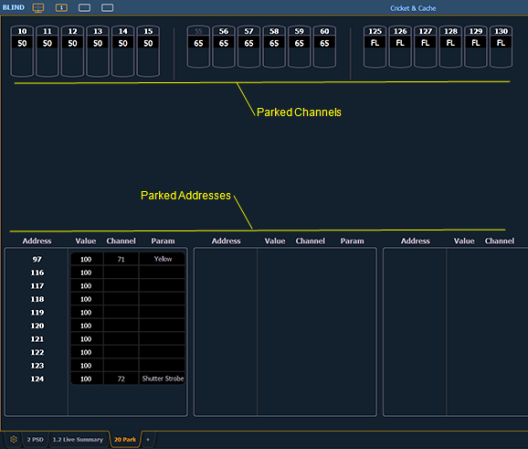

You can park and unpark channel parameters or addresses from the park display. Open the display by pressing [Park] [Park] or [Tab] [2] [0]. While in this display, it is assumed that you want to park channels or parameters, therefore the use of the [Park] key is not necessary when parking, but is used for unparking. You can also use [At] [Enter] to unpark.

Following are examples for parking channel parameters from the park display:
You can use the {Offset} softkey to aid in channel selection. For a list of the {Offset} options, see Offset .
Following are examples for clearing parked values while in the park display:
Below are examples for parking addresses in the park display:
Note: When parking a range of addresses in Park, using [Thru] will only park the intensities. If you want to park all of the addresses and parameters within the selected range, you will need to use [Thru] [Thru].